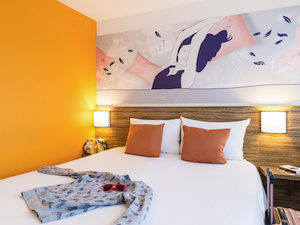
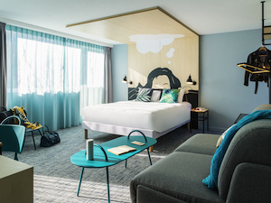

Namiddag
De essentie van deze dag is het feit dat we elkaar doodgraag zien. Tijdens een alternatieve huwelijksceremonie staan we stil bij die liefde. Het is een moment om van anderen te horen hoe zij ons als koppel zien of wat zij ons toewensen. Een moment om betekenis te geven aan onze keuze voor elkaar, om ringen uit te wisselen en geloften uit te spreken. Want dat is waar het op onze huwelijksdag echt om draait: onze liefde voor elkaar.
Na het geven van ons ja-woord is het tijd om te ontspannen bij een hapje en een drankje, gelukswensen te ontvangen en gezellig bij te praten met familie en vrienden.
Avond
Tekst diner.
Tekst Dansfeest.
Chemin du Serrui 4
1325 Corroy-Le-Grand
Waals-Brabant, België
Van E411 richting Namen:
Neem afrit 9, Corroy-le-Grand
Ga links op N25a / Rue de Chastre
Sla tweede straat links in, richting Vieusart
(Hier staat ook al bord "Ferme du Château")
Sla meteen rechts af (haarspeldbocht)
Volg deze baan rechtdoor tot aan de boerderij
OPGEPAST: GPS zal je op kruispunt naar rechts sturen,
dit is niet juist, ga rechtdoor.
Zin om de hele avond door te feesten en geen BOB te moeten zoeken?
Helaas zijn er geen hotels op wandelafstand van de zaal, maar deze hotels zijn snel bereikbaar met taxi.
Hotel
The haldi ceremony is usually held separately for the bride and the groom. This one is for the bride. It is a low-key event that involves the application of turmeric paste on the hands, legs and face of the bride. The groom is not allowed to see the bride after this ritual until the final wedding ceremony starts.
This is the main event in the entire wedding when the bride and the groom tie the knot. The groom comes with the barat and is greeted by the bride side with some dhol of course as maximum number of guests would be attending this event. This is when the couple circle the sacred fire and are finally declared husband and wife.
Kamers
Geniet in deze kamer (min 18m2) met trendy kleuren van het comfort, de eenvoud, het terras en het uitzicht op het bos. De kamer is voorzien van 1 tweepersoonsbed of 2 enkele bedden, een bureau, een flatscreen tv, gratis WiFi en een badkamer met bad/douche.
Moderne, comfortabele kamer (min 22m2) met uitzicht op het park. Er is een groot bed, bureau, slaapbank, breedbeeld-tv, individueel regelbare airconditioning, gratis WiFi, badkamer en inloopdouche en een apart toilet.
Namiddag
De essentie van deze dag is het feit dat we elkaar doodgraag zien. Tijdens een alternatieve huwelijksceremonie staan we stil bij die liefde. Het is een moment om van anderen te horen hoe zij ons als koppel zien of wat zij ons toewensen. Een moment om betekenis te geven aan onze keuze voor elkaar, om ringen uit te wisselen en geloften uit te spreken. Want dat is waar het op onze huwelijksdag echt om draait: onze liefde voor elkaar.
Na het geven van ons ja-woord is het tijd om te ontspannen bij een hapje en een drankje, gelukswensen te ontvangen en gezellig bij te praten met familie en vrienden.
Avond
Tekst diner.
Tekst Dansfeest.
We zouden het heel erg waarderen als je voor 1 September kan bevestigen.